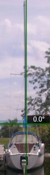
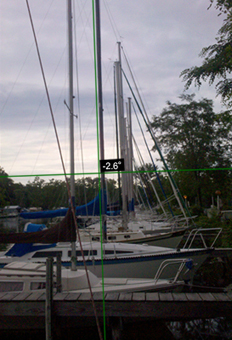

(NOTE: This should be done on a day with no wind, with the boat perfectly horizontal. Move things around if you have to, to balance the boat).
Disclaimer: Although MastTuner will help you identify misalignments in the mast, rigging work is best done by a professional rigger. Improperly tensioned shrouds and stays can lead to all kinds of expensive problems including mast and deck hardware failures. If you do decide to do your own work, educate yourself, buy the right tools (at a minimum buy a Loos gauge), and get advice from a pro.

You have to look closely to see the green horizontal and vertical lines in this picture. The small black box in the center of the screen is showing the degrees of tilt.
Viewing the boat from the bow or stern, hold the horizontal line at 0, and align the vertical line with the mast.
If you look closely, you can see that the top of the mast looks a bit warped. The side stays are keeping the mast straight up to the spreaders but from there the mast bends slightly to port. The port and starboard shrouds are not set correctly. You can verify this by standing at the base of the mast and sighting up.
With MastTuner, you can also able to check the rake of the mast.
To measure the angle of the mast, tilt the phone so that the verticle green line lays along the mast. The readout displays the angle in degrees. If you prefer, the configuration menu will give you the option of displaying the readout in inches/foot, millimeters/meter, or percent.
